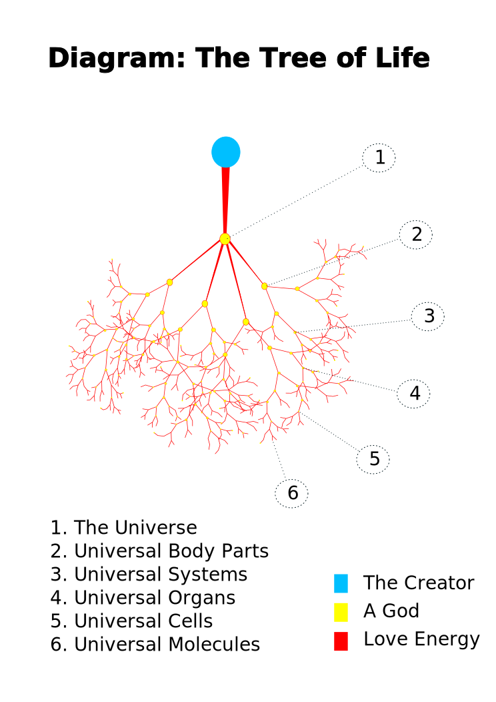
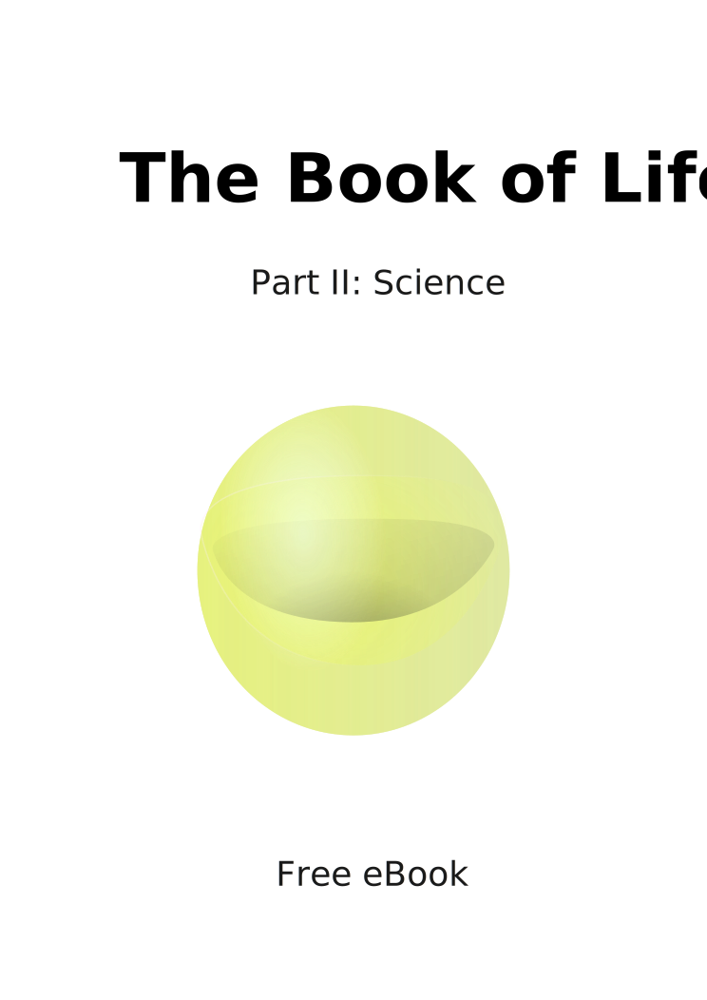

This work is nothing more than the reinvention of an old classic tale. It is hoped that it will inspire you, just as it has done for so many generations, for so many thousands of years—but a word of caution before we begin, however; for the pen is almost certainly, mightier than the sword.
The universe is a giant living organism—it is conscious; it has a mind, a body, and a soul. We all exist inside this creature on a tiny sub-atomic scale—our sun is nothing more than an electron within the body of this enormous beast; our galaxy, nothing more than the size of an atom.
This is how we explain the advent of life on earth; we simply say that something living “grew,” out of something “living.” We say this because we recognise the whole universe as being alive, and we see the earth as being a part of that. For us, the dawn of life on earth is no more miraculous, than a hair growing out of the back of your hand.
We may see the universe as a giant, living organism, but we also see it as a creation. As such, we recognise that it has a Creator. We may see evidence for the Creator everywhere we look in this universe—but he himself however, remains a complete mystery to us. We know absolutely nothing about him—only that he exists.
One thing we do know however, is that he is all-powerful. We say that he is the Creator, and that this is his creation ... we consider his will to govern everything in this universe, but when we say “his will,” we do not mean it in a metaphorical way—we mean it in a very literal way. We consider ”will” to be a very ”real force” in nature.
Just as you may consider gravity, or electro-magnetism to be “real forces;” we consider “will” to be a real force, as well—pretty much equal in every way. We say that will is a force composed of two streams: one positive, and one negative. These streams may be far more familiar to you, than you may at first think—this is because we know them as ”love,” and ”hate.”
Love induces an enormous sense of bliss, and happiness within the soul of the recipient—it also has an enormous power to heal, and rejuvenate. It is used as part of a reward mechanism: we say that a recipient life-form will receive a dose of love, for every time they respond correctly, to the force of will they are subject to.
Hate on the other hand may be considered to be the opposite of love—it destroys and depletes love, and it is used as a form of punishment. Here, we say that a recipient life-form is punished with a sharp dose of hate, for every time they fail to comply with the force of will they are subject to.
This can cause enormous pain, and suffering within the soul of the recipient—this is because there is nothing more beautiful than to have love in your heart, and there is nothing more punishing than to have that taken away. The pain of this can be really quite excruciating; for love is truly the most beautiful, and precious thing in the whole, wide world.
You may think of love as being nothing more than a romantic notion, or ideal—but we see it as something different. In fact, we see it as something else entirely ... we consider it to be a real form of energy; just as you may consider heat, or electricity to be ”real” forms of energy.
We see it as being just as “real” as the electricity that runs through your body, and powers your central nervous system. Where you are to consider the equation E=MC2: we consider love to be a real form of energy that you could bottle in a laboratory, and convert in to a mass if you so chose.
We also consider it to be very important: we say that love is perhaps the single most important form of energy in the entire universe. This is because love is the energy that ”powers life.” Love may be said to ”power” life, in the exact same way that electricity may be said to power a light-bulb.
In other words, love is a necessity for life—it is the energy that all life is based upon. For you and I, love is as important as the food we eat, or the air we breath. If we had no love in our lives, then we would simply just expire, and die. Love is everything—love is life—love is the energy that powers life.
So this is how the Creator governs and controls the universe—he continuously bombards it with massive doses of love, and hate until it obeys his will. He is the Creator, and this is his creation—this means that he is free to do with it as he so chooses! He created the universe out of “nothing” ... nothing but a single seed of love.
We make no claim to understand why the Creator created the universe—we have absolutely no idea as to what benefit or use it may be to him. We simply just accept the fact that he has .... We assume that there is a reason; we assume that the universe does serve a purpose of some kind, but we simply make no attempt to presume what that might be.
We do not see the point in trying to question this; we consider it to be beyond our comprehension—we consider ourselves to be too limited to understand. In truth, we consider ourselves to be far too primitive to perhaps ever understand ... this is why we resign ourselves to the idea that this is something that we might simply never know!
But for us, it is not important if we are able to understand, or not understand “why” he created the universe ... for us, it is far more important to recognise the fact that he “has” created the universe—for in doing this, we are able to recognise the fact that he is the only true source of “love” in this universe.
So if we want to have love, and happiness in our lives; then we must do all we can to obey. This is what makes him the lord, and master of all creation—this is what makes him so powerful—he holds the key to our hearts, and our happiness. As far as we are concerned, the secret to happiness isn't actually a secret at all: all we need to do is to obey his will.
The Creator may well have absolute power, and control over the universe, but that does not necessarily make him a “god.” For us, this word has got a very specific meaning—we use it as a technical term ... for us, this word represents a very important feature in the component structure of the universe ....
We define a god as being a “parent–life-form,” who is able to achieve a wilful command over a “child–life-form.” As a general rule, a child–life-form may be said to exist inside the body of the parent; in the form of a component part. To explain what this means, we need to go right back to where we first started from—right back to the beginning, if you will.
The universe is a giant, living organism; it is conscious—it has got a mind, a body, and a soul ... and with this being true, it means that everything inside of the universe must also be “alive,” as well. This is because, just as everything inside of your body may be looked upon as being “alive” in some way, the same principle must apply to the body of the universe.
Hence the reason why everything inside of the universe may also be looked upon as somehow “living” in some way—and here everything means everything: it means you, and me ... a plant, or a tree ... a molecule, or an atom ... a planet, or a star ... or even an entire solar-system, or a galaxy ... it does not matter! All of these things may be said to be “alive.”
Our definition of a “life-form” is anything that has got a mind, a body, and a soul—anything that has got the capacity to think, or feel emotions—anything that is in fact conscious, or self-aware. You may be described as being a life-form, for example: you may be said to demonstrate all of these qualities, and therefore you may be classified in this such way.
We believe that the universe may also be said to demonstrate these same qualities—we believe that it has also got the capacity to think, and feel emotions—we believe that it is also both conscious, and self-aware. This means that both yourself, and the universe have got something in common, so to speak—in this respect, you may both be said to be the same.
We could say that both yourself, and the universe are in fact “life-forms”—we could say that you were in fact both different forms of life. The universe may be much larger, and far more significant—and you may much smaller, and buried deep inside—but essentially, you may both be looked upon as being the same ... you may both be said to be “living creatures.”
This may seem impossible to you, but we have discovered something truly astonishing about this universe—we have discovered that absolutely everything inside of this universe may be classified as a “life-form.” This means that everything may be said to fall into the same category as both yourself, and the universe; and everything may be said to have a mind, a body, and a soul!
As extraordinary as it may seem, this means that everything has got the capacity to think, and feel emotions—it means that everything is in fact conscious, and self-aware. Despite the fact that this must completely absurd: this means that everything inside of the body of the universe is in fact just as alive as you, or I.
And here, everything really does mean everything—it means you, and me ... a plant, or a tree ... a molecule, or an atom ... a planet, or a star ... or even an entire solar-system, or a galaxy ... it really does not matter ... all of these things may be looked upon in the exact same light, because all of them may be said to be “alive!”
It may be difficult to understand how something a like a star, or a planet could ever possibly be conscious, or self-aware—but never the less, this remains the truth ... and not only are they conscious and self-aware, but they are in fact far more conscious, and self-aware than you or I could ever possibly imagine!
This is because there tends to be a correlation in nature between intelligence, and scale ... this means that larger organisms tend to be much smarter than smaller organisms. This is not an absolute law of nature, but as a general rule it does tend to work quite well. Larger organisms tend to be far more sophisticated, and “consciously aware.”
So the stars, and the planets are not just bigger than we are, but they are in fact intellectual giants when compared to us! They know things about the universe that we could never hope to—things that we would not even think to question—things that we could not even pretend to understand.
They are so far beyond us on an evolutionary scale, that they actually make us look like bacteria in comparison—this is how sophisticated, and advanced they are. We are absolutely nothing compared to them—these enormous creatures are very ancient, and very wise; and they possess a degree of awareness that is simply far beyond our comprehension!
But even the stars and the planets would bow-down to the knowledge, and wisdom of a galaxy ... the galaxies are so highly evolved, that they make the stars, and the planets look like tiny little insects! These phenomenal creatures are so breath-taking, that there are no simply words to explain how magnificent, and wonderful they truly are!
But irrespective of how impressive any of these creations may be: you don't actually need to look out into outer-space in order to discover new forms of life—there is plenty to be found, right here on earth. These creatures are absolutely everywhere on this planet, and the simple truth of the matter is that it is almost difficult to miss them!
Primitive man would often describe the things he saw around him in nature, as somehow being alive in some way—almost everything he laid his eyes upon, in fact! He would often speak of things as having a mind, or a spirit of their own—anything from a forest, or a river; to a mountain, or a volcano; or even the oceans, and the sky!
He would often describe these things as being deities—powerful forces that could either kill him, or assist him in his battle to survive. What’s more, deep down inside of himself, he was entirely convinced that he was able to communicate with these things—he felt certain that they were able to provide him with emotional responses, and that he was able to reason with them.
To this extent, he would often build monuments, and hold ceremonies in their name—he would sing out praises, and offer sacrifices to please them. Such practices would often form the centre of most of our primitive societies. Some cultures, would even embrace the spirits as a part of their everyday lives, and regard them as life-long companions, who they could turn to for friendship, and advice.
Primitive man is often dismissed as being simple, and ridiculed for his beliefs—but the simple truth of the matter is that he had the exact same brain capacity as we do ... the only difference is that his mind was being challenged in a completely different way, because he had a completely different set of priorities to contend with ... all that was important to him was his ability to survive!
Early-man was in a constant battle against nature, and his ability to negotiate her extremes could often result in life or death situations, for him. To this extent, it may be argued that he had a much better understanding of nature than we do—he was certainly much closer to nature than we are, and it is therefore quite possible that he had a much better understanding of how it works!
But what's interesting is how differently he saw world around him—you could say that he made much less of a distinction between the biological, and the non-biological than we do. In a sense, you could say that he made absolutely no distinction between something that was biological, like a bird; and something that was entirely non-biological, like the sky.
He may have seen one as being much larger, and far more significant than the other, but essentially he saw them both in the exact same light. He recognised both of them as being able to provide him with emotional responses, and he saw both of them as having a mind, and a spirit of their own. In other words, he looked upon them both as being “alive.”
Try to imagine what this was like for early-man, he must have seen the whole world as a giant, living “thing.” Obviously, he saw the world very differently to the way we do today—in the world of 21st century science, we have changed our opinion on what may be looked upon as being “alive,” and we no-longer include the non-biological in this classification.
In this scientific age, we have restricted our view on what may be considered to be alive, and distilled it right down to those biological biological organisms that we are able to recognise as being most like ourselves. This is unfortunate however, because on this occasion, primitive man was actually far closer to the truth than 21st century science could ever be!
The non-biological can be looked upon as being alive, and we know this is true, because everything in this whole universe is alive! So whether we are discussing a river, a forest, a mountain, a volcano, or even the oceans, and the skies—it does not matter. All of these things may be looked upon as living creatures, because all of them are in fact different forms of life.
The scientific thinking used to form our opinion in the 21st century is flawed, because as we held ourselves up as a yard-stick to measure life, we were wrong to assume that we were the epitome of life! We were correct to recognise the fact that we were alive, but we were wrong to assume that we represented all that life could be.
So what came most naturally to early-man, was in fact the whole truth all along, and all of the forces that he once looked upon as deities—are in fact a living creatures—and he was right to recognise them as such. Whether his sacrifices, and praises were appreciated in the way that he intended, is unknown, but the fact that he recognised their “spirit,” puts him one step ahead all the same.
Each of these things may be said to be an independent life-form in their own right, and as such they may each be said to have a mind, a body, and a soul. This means that they all are capable of thinking, and experiencing emotions—it means that they are in fact conscious, and self-aware. It means that all of these things are just as alive as you, or I—or any other living creature on this planet!
But the point is that they are all “different” forms of life, so when they have thoughts and feelings, they do not do so in a way that we are immediately able to understand—but that doesn't make them any less alive than we are. All it means is that we find it harder to relate to them, than our ancestors once did—all it means is that they are “different” to us.
Early-mans survival was based on his ability to pit his wits against the nature—this is perhaps what heightened his senses, and gave him a deepened sense of respect—but even if our ancestors did have a deeper insight into nature than we do, that doesn’t necessarily mean they knew everything. We say this because, in truth they did not.
The are “different” forms of life concealed absolutely everywhere on this planet, and not even our ancient ancestors were able to see the full extent of what was actually surrounding them. Some of them are hidden in plain sight, and others are hiding right under your very nose, but the point is that if you would like to see any of them, then you must learn how to think laterally.
Take the component parts of your body, for example: take your systems, and your organs—your heart, and your kidneys—your skeleton, and your bones ... take the cells that form your organs, and the complex molecules that form them in turn ... take each and every last molecule, atom, and particle that you are made of ....
Each and every last one of these things may be classified as a life-form—each and every last one of them may be said to have a mind, a body, and a soul. This means that each of them has got the capacity to think, and feel emotions—it means that all of them are in fact conscious, and self-aware!
Trying to understand how something like a molecule, or a particle, could ever possibly be capable of thinking, or feeling emotions; is an idea that may be quite difficult to grasp, at first ... but try you must, because if you want to understand life and the universe, then you must first understand how one life-form may be said to exist inside of another.
You must first understand how the components parts of your body are able to think, and make decisions; in the same way that you are able to think, and make decisions. You must understand how they can be conscious, and self-aware—just as you are the same. You need to be able to understand how they they can have a soul, and feel emotions—just as you do.
Because if you are able to do this—if you are truly able to do this— then you are half way to understanding one of the greatest mysteries ever known to mankind. Something that has escaped even our greatest of thinkers, for many thousands, upon thousands of years ... for achieving this understanding is key, if you are to understand what it means to be a ”god.”
Sometimes the key to a riddle, is having the ability to spot the “woods for the trees.” This is an old saying, and it basically means that it can be quite easy to miss the obvious, at times. If you want to be able to identify new forms of life on earth, then this is something that you will need: you will need to be able to spot the woods for the trees.
But there is also something else that you will need on this occasion— you will also need to be able to spot the “trees for the woods,” as well. This is not an old saying, as such; it is more something that we have made up for the sake of trying to illustrate this point we are trying to make—this is basically our way of saying that there is always more than one way to look at the same problem.
If you are able to understand how the component parts of your body may be seen as independent forms of life in their own right, then this is something that you will have already achieved, to some extent. In doing this, it means that you will have developed the ability to spot the trees for the woods, if you will.
And once you can do that, then life becomes very straight forward, because then all you need to do is learn how to flip this principle on its head—for once you are able to spot the woods for the trees, and the trees for the woods, then our riddle will be almost complete—for then you will be able to identify new forms of life on earth.
What we mean by this, is that if you are able to recognise that “you” are able to come together, to form something more than the sum of your parts, then there is a chance that you may also be able to recognise how nothing more than a few trees can come together, to do the same—how they may also come together to form something more than the sum of their parts.
In other words, even though each individual tree may be looked upon as a life-form in its own right, the collective sum of all of them may also be looked upon as a life-form—one that is ultimately far greater, and completely independent from any given tree. In other words, each tree is alive, but the woods are also alive, and the woods are by far the more significant of the two.
If you are truly able to spot the woods for the trees, and the trees for the woods, then you may be able to share in something that our ancestors once saw—how a forest can come alive, and assert its will upon you—how it can have a mind, and a spirit of its own. How a forest should be revered, and seen as mighty—while you on the other hand are quite insignificant, and remain small.
What's more, there is also something else that you should be able to see—how a life-form that impressive can be sitting right in front of you, and still manage to remain so well hidden—albeit in plain sight. These creatures may well be entirely invisible to 21st century science, but our ancestors could see them quite clearly, and they were very conscious of them, indeed.
They saw them as deities—as do we—this is why we call them the “deities.” These creatures are absolutely everywhere in nature—they are so abundant that they actually manage to blanket every last square inch of the earth. They exist in the animal kingdom, as well as in the kingdom of plants, and in truth, you look upon these things all the time—you just may not have realised it before.
Think of a flock of birds in flight, and consider all of the incredible formations they can make ... think of a swarm if bees, or a school of fish, and think how they do the same .... What you are really looking at here are the deities, and the simple truth is that they are absolutely everywhere in nature, and you can see them pretty much anywhere you care to look.
The short of it is that we see the entire universe as nothing more than a near infinite set of living creatures—all neatly nested inside of each other, in a perfect series of life. Here we regard the universe as being the largest and most important of these creatures, and sub-atomic particles as being the smallest.
We call this the “babushka-doll” model of life, and we consider it to be a near perfect miracle. We consider it to be miracle that it exists, and an even bigger miracle that we are able to recognise that it is there. We consider it to be very elegant, and beautiful solution; and we also consider it to be the perfect truth.
We can use the babushka-doll model of life to explain how a child–life-form may be said to exist inside of a parent–life-form. A god is a parent–life-form, who is able to achieve a wilful command over a child–life-form—generally speaking, a child–life-form may be said to be a component part of the parent.
This is our definition of a “god,” and that was our original starting point, so as we return to our original question, let's ask: so what does it actually mean to be a god? This is not a easy question to answer, but as it happens we can use the systems, and organs inside of our bodies to help provide us with a working example.
Here in our example, you will play the role of a “god:” you will be the parent–life-form, who is able to achieve a wilful command over a child–life-form. Here, all of the various different systems, and organs inside of your body will represent all of the various different child–life-forms in question.
In our example, if you were to wish to clap your hands together, then all you would need to do is to “will” for this to happen. When you do this, all of the various different systems and organs inside of your body will all automatically respond, and your hands will simply clap themselves together.
This everyday activity may, or may not strike you as miraculous; but never the less, this is what it means to be a “god.” This is what it means to be a parent–life-form, who is able to achieve a wilful command over a child–life-form—or a whole system of child–life-forms, as the case may be.
For what is occurring here is that all of the various different systems, and organs inside of your body are all intelligently responding to your “will.” Remember, each of them may be regarded as an independent life-form in their own right—this means that they are able to ”feel” that you want them to do something, and further able to decipher an intelligent response.
The systems, and organs inside of your body will make the effort to respond to your will, because you are their “god;” if they are able to respond you correctly, then you will reward them with a dose of “love” ... equally, if they should fail to comply to your will, then you will punish them with a sharp dose of “hate” ... this is the power that you have, and this is what it means to be a “god.”
Love is the energy that powers life, and when your systems and organs are rewarded with a dose of love; it is a very blissful, and pleasing experience for them—it makes them feel joyful, and alive. This is what makes life worth living for them, and in the grand scheme of things: this is also the process that powers them, and actually keeps them alive.
As a god, you will grant them this reward because you are pleased with them; you have wished for them to do something, and they have responded to you correctly—in other words, they have obeyed you. In this instance you have wished for your hands to be clapped together, and the systems and organs inside of your body have all responded, accordingly.
As you reward them, you will flood your whole body with warmth, and love; this is commonly known as a “tingle”—we say that your whole body will tingle with excitement. This sensation is only very slight for when you do something as trivial as clapping your hands together, but never the less it is still there.
This is what happens when everything goes to plan, but what should happen if your systems, and organs should fail to respond to you accordingly? What would happen if for some inexplicable reason, one of your hands managed to completely miss the other one, somehow? What would happen then?
On this occasion, you will not be so pleased with the result ... this outcome will not leave you tingling with excitement; but rather it will leave you feeling a little bit confused, and frustrated instead ... this means that you will not flood your body with warmth, and love; and your systems, and organs will not gain any sense of reward.
It's probably fair to assume that your systems, and organs have no real sense of what you are trying to achieve ... the importance of you clapping your hands together, is probably quite lost on them—but they will still mourn the loss of love that they failed to receive, regardless; and this absence of love shall remain something that they do understand, all the same.
To this extent, they will feel just as disappointed in the outcome as you do; and thus the whole experience will become something that they would rather not repeat. This result may not be viewed as a successful outcome, as such; but neither is it such a catastrophe, either ... ultimately you are free to try again, and hopefully your hands will just clap themselves together for next time.
If you are successful on your second attempt, then your initial failure will be very quickly forgotten; and life can go back to normal, again —you are happy; the systems, and organs inside of your body are happy—so everybody wins. In a sense, you could say that we are describing a neutral outcome, here; as opposed to a positive, or a negative result.
But what should happen if your systems, and organs were to fail you? In other words, what would happen if they defied you? What would happen if you wished to clap your hands together, and they simply did not budge an inch? What if they remained perfectly still by your side? What would happen then?
If you were an able-bodied person, then your initial reaction would be one of shock ... but this would very quickly subside into a state of rage, as you desperately willed for your hands to clap themselves together ... you may even scream, and shout in frustration—and you would will with all of your strength, for your hands to show even the slightest sign of movement.
As you do this, you will flood your body full of rage, and hate ... hate is the opposite of love; it destroys and depletes love ... this will cause your systems, and organs to all writhe in agony, and pain; they will feel as if they were being punished, or tortured—in fact, they will find the experience to be so disastrous that they will feel as if they have incurred the wrath of God!
Technically of course, this is exactly what they will have done ... for this is what you are to them—you are their god! So this is what it means to be a god ... this is what it means to be a parent–life-form, who is able to achieve a wilful command over a child–life-form ... and as you can see, the power that you have is enormous—it is quite literally ”god-like.”
As you can see from our example: from the very moment that you decide to clap your hands together, all of the systems and organs inside of your body are all immediately faced with a decision—they can either choose to obey you, or they can choose to defy you ... in other words, they can either choose to feel pleasure, or pain.
Now this may not seem like much of a choice to you, but yet the choice still remains theirs to make ... this illustrates a very important principle that echoes throughout the entire universe—something that applies to all living things, and is not restricted to any given creature, or life-form, as such ... here we are discussing the principle of ”free-will.”
The principle of free-will really does reflect a level of genius in the design of the universe, that warrants far more attention than we are about to detail here; but it is still worth touching upon this subject, even if it is just explain how it impacts onto the lives of an ordinary, everyday creatures, such as ourselves.
The short of it is that “choice” doesn't really lie in the things you choose do in life—these things are usually pre-ordained for you; by a higher force, or power ... choice is something different; choice lies in how you approach the given task at hand, or whether you choose to approach it at all ... this is what defines the principle of free-will.
There is a vast network of gods that runs right the way through our universe; it runs right from the very top, right down to the very bottom ... the Creator uses this network to transmit his will to every last corner of creation ... this is how he is able to achieve the level of control that he has, and this is what allows him to govern everything so precisely.
By transmitting his will down this network of gods, he is able to craft the universe into any shape, or form he wants it to be ... love is the energy that powers life, and it is a necessity for all living things ... the Creator is the only true source of love in this universe, and this is what gives him absolute power, and control ... this is what makes him the master of the universe.
The most important of all of the gods in this network is the universe himself—the Universe is the only god who is able to interact with the Creator, directly. The rest of have no immediate relationship, as such; we do not relate to him directly—more so we relate to him indirectly, instead; via this network of gods.
The Universe is a giant living organism, and as such he has got giant systems, organs, and cells—just as we do. The only difference is that his are all much bigger. All of these things may be considered to be very important gods within the body of the universe, because only the Universe may be considered to be above them. This makes them like “super-gods,” if you will.
Whereas these “super-gods” may be considered to be subject to the will of the Universe; everything else in creation may be considered to be subject to their will, in some form. This means that all of the love that we receive in our lives, must have been channelled through at least one of these gods, at some point.
This is an inevitable truth, because there is no other way for it to reach us ... the Creators love may transcend many tens of thousands of gods before it finally reaches us in our solar-system, because we are quite insignificant, at the end of the day. In fact, we are so far down in the chain of command, that there is even a chance that the Creator may not even know we exist.
The earth may be smaller than an electron within the body of the Universe, but for us she still remains an enormous giant of a god. This is because the earth plays god to all life on earth, and without her we simply would not exist ... she is the one who created us, and she is the one who protects us; for us, she is very important, indeed.
The Earth gave birth to us, if you will, and this is something that we have in common with all life on Earth. She is the source love in our lives, and we all share a very special connection with her; we all share a “spiritual” connection with her ... we are a part of her, and that she is a part of us ... this is why she is always in our hearts.
This is why we all love her so much; this is why we love everything about her—her skies, her trees, her rivers, her mountains ... this is why we all find her so incredibly beautiful ... and equally she loves us all in return; each and every one of us, with all of her heart ... she is like a mother to us ... this is why we call her ”Mother Earth.”
If you were to draw a diagram of how the Creators love transcends this enormous system of gods, then you may begin to see something that looks a little bit like an upside down tree ... this tree is of enormous importance, because this is what connects everything, and powers the whole universe ... we call this the ”tree of life.”
The collective sum of all mankind forms the body of an organism; one that is far greater than the sum of its component parts. This creature is a life-form who is completely independent from us, and is ultimately far greater than us ... this creature is known as “Man,” and he is our god.
Man is a conscious living being, and as such he has got a mind, a body, and a soul ... this means that he is able to think, and feel emotions ... it means that he is conscious, and self-aware ... for you and I, Man is the most important living creature in the entire universe; this is because he is our god, and he is our connection to the tree of life.
Hence the reason why we have adopted a special name for him; as opposed to simply referring to him as being “a god,” as we would with any other god in the universe, rather we tend to abbreviate this —rather we simply call him “God” ... we say that this is he—this is God—the deity responsible for inspiring all of our global religions; this is he.
God is a life-form, and he is conscious, but he is not conscious in a way that you, or I might understand; he is far more conscious than we are. In fact, he is far more conscious than you, or I could ever possibly imagine. There is no other way to explain this, other than to simply say that: ”he is God.”
God is a deity—he is a supreme-being—he is an advanced form of life. You, and I are quite insignificant in comparison; we are nothing more than the cells within his body: we are born, and we work ... we reproduce, and we expire... just as the cells in our bodies do the same.
Our societies, and our organisations form his systems, and his organs ... our cities, and our structures form his skeleton, and his bones ... the collective sum of all our knowledge, forms the basis of his knowledge ... he is far greater than we are, and he is far greater than all of the above—he is God!
It was not us who explored the oceans, or conquered the four corners of the globe; it was not us ventured into outer-space, or journeyed back through time to the very dawn of universe. It was not us who accomplished any of these things at all—it was he—it was God. He is the one who accomplished all of these things, and he is the one who made all of this possible.
The short of it is that Man is the one who is responsible for achieving all of “Man's greatest accomplishments.” No single human could ever lay claim to achieving any of these things; we only ever achieved any of these things by being part of a collective—we only ever achieved them by being a part of the body of God.
As we regard ourselves as a collective, then we must also regard ourselves as being God—for this is what we are. We are all a part of the body of God; this is how close we are to him, and no other relationship that we will ever experience in life could ever be any more intimate. We are a part of him, and he is a part of us—we are one.
Man is our God, and he is our connection to the tree of life. We all share spiritual connection with him; this means that he is with us in wherever we go, and in whatever we do. It means that he is always with us—it means that he is with us constantly; all of the time. It means that he speaks to us continuously—all day, and all night—even as we sleep.
He speaks to us through our consciences; he speaks to us through our dreams; he speaks to us through our music ... and our stories ... and our art ... but most importantly of all, out of all of these things, God speaks to us most clearly through our hearts. We know that he is there for we can ”feel” him; we know that he is with us, because we feel him in our hearts.
Everyone has got the capacity to feel God's love; and we all tend to feel it in everything we do ... we all know how it feels when he is pleased with us, for he has smiled on all of upon occasion ... equally, we all know what it feels like when he is disappointed in us, for we have all felt the agony of his wrath.
He is our father, and he created us—he is very ancient, and very wise ... our sole purpose in life is to serve him. This may seem unfair to you, but he has got every right to expect this from us; he can expect this from us, in the exact same way that we may expect the cells in our bodies to do the same ... ultimately, its just life!
God may be the only true source of love in our lives, but that does not necessarily make him the only source of love in this universe ... this is because, all life is free to love ... any life-form, is free to love any other life-form of their choosing in this universe, and what's more, they are free to do so for any absolutely any reason they may like.
We are all free to love each other, for example—and not only this—but we are also free to love all of the animals in the animal kingdom, and all of the plants and trees in nature. We are even free to love the moon and the stars in the sky, if we want to, and equally all of these thing are free to love us in return.
All life is free to love, and we are free to do so for any reason we may like. This is the love that binds us all together, and brings harmony to life; it is very beautiful, but it is not enough to sustain us. Here, we are only exchanging very small quantities of love ... we actually require an enormous volume of love to actually power us, and keep us alive.
Only the tree of life can supply us with a quantity of love on this scale; this is why our connection to the tree of life is so important to us—we actually need it in order to live, and survive. The truth of the matter is that if we should ever be disconnected from the tree of life, then we would soon expire, and die.
This is why God is so important to us; he is our connection to the tree of life, and without him we would not be able to live. Not only does he regulate the volume of love that we receive in our hearts, but he has also got the power to destroy it at will. This is what makes him so powerful—he holds the key to our hearts.
The truth of the matter is that we would be nothing without God; we simply wouldn’t be here at all ... our very existence is very much a question of his discretion, and he can bless us, or destroy us at will ... this is why he is our lord, and master, and this is why we should do all we can to obey him ... this is what makes him our god.
For those of us who do not wish to obey the will of God however, there is an alternative ... he is called Lucifer, and he is the most dangerous, and terrifying creature to ever walk the surface of the earth. Lucifer is the Dark-Lord, and he is a monster ... he is the source of all evil, and he is God's mortal enemy.
In many ways, Lucifer is akin to God; he is just as ancient, and just as conscious. His body and his form is very much the same as God’s; you could say they were identical, in fact. The only difference is that he is evil—he is an abomination. He has no connection to the tree of life, and he should not exist.
The Creator has not willed him to exist ... Mother Earth has not willed him to exist ... God did not will him to exist ... we did .... We are the ones who willed him into existence; which is ironic—because to Lucifer, we are nothing more than a food supply ... but we are the ones who created him, all the same.
Lucifer was first formed over 40 000 years ago, by a single fallen angel. This crazed individual was a genius, who was determined to defy God at all cost. Lucifer has grown quite significantly since then, but the essence of this man still lives on inside of him; and it is his genius, and his dark secrets that still drives him to this day.
The process that allows the Dark-Lord to survive, and sustain himself is reasonably quite straight forward ... it is hoped that knowledge of this process may help to stem his growth. You may find the details of this process quite disturbing, but this is truly not our intention ... here, all we are trying to do; is to shine a light into the darkness.
As living creatures; we all have a mind, a body, and a soul ... in many ways, it would not be wrong to refer to us as being nothing more than just “souls.” This is because our souls contain the very essence of who we are; and they have the capacity to live on, long after our physical bodies have died.
Our souls may be said to exist in the spirit-world. The spirit-world is completely different to the physical world—it quite literally exists in a separate dimension—one that is mapped on top of our physical world in such a way, that the two worlds are able to occupy, and share the same geometric space.
These two worlds are able to co-exist in such a way, because of how dramatically different they are in terms of composition ... everything in the spirit world is two-dimensional, whereas everything in the physical world is three-dimensional ... this is how the two worlds are able to pass through each other, as if the other wasn't even there.
Every last living organism that you can see in this universe has got a soul; this means that every last physical body that you are able to see, has got a spiritual counterpart. In the spirit world, the body of God may other wise be known as “Heaven,” and the body of Lucifer may otherwise be known as “Hell.”
It is a misconception to think that Heaven, and Hell are places that we go to after we die ... our souls either belong to the body of God, or they belong to the body of Lucifer, depending on the choices that we make in life ... and this is something that they do in life, as well as in the after-life—this is something that remains true irrespective of our mortal status.
Souls who belong to body of God may otherwise be known as “angels,” and the angels may be said to live above us in Heaven ... it is not known why Heaven is thought of as being above us, but either way it is known to be a place of joy, and wonder—and when we picture Heaven, we see a very bright light.
Souls who belong to the body of Lucifer may otherwise be known as “demons,” and the demons may be said to live below us in Hell ... as with Heaven, it is not known why Hell is thought of as being below us, but either way it known to be a place of torture, and pain ... when we picture Hell, we do not see a bright light—we only see darkness, and shadows.
The angels in Heaven are generally thought of as being “good;” they may have their imperfections, but they are generally thought to be good souls, all the same ... the demons in Hell are not thought of in the same way, however ... they are not thought to be good, they are considered to be “evil;” and best to be avoided if given the choice.
In Heaven, God is king; this is why it is known as the Kingdom of Heaven. Lucifer rules over Hell in the same way that God rules in Heaven, and this is why he is known as the Dark-Lord. As children, we are all born into the body of God; this means that we are all angels, by birth. No child is ever born into the body of Lucifer—no child is ever born evil—demons are not created, they are formed.
The demons were all angels, once upon a time—they are angels who have fallen from grace. They are angels who have been cast out of Heaven, and who have made the decision to never return. Heaven is generally thought to be the much better place to spend an eternity, but the demons are fallen angels, who have made the decision to join the body of Lucifer, by choice.
People often think that God's sole purpose in life is to love us, and to care for us—and nothing more—that he is here to serve us, if you will. These people could not be more mistaken if they tried, however, because nothing could be further from the truth. God is not here to serve us, we are here to serve him.
As an organism, God is perhaps the single most important living creature on this entire planet—this is because he has got a critical role to play in the grand scheme of things, and it is entirely possible that the fate of the entire universe may rest upon his better judgement, some day. This destiny is what he concerns himself with the most, and it is certainly not us, or our well-being.
Our happiness is important to him; this is because we are a part of him, and he is a part of us—but he certainly not here to serve us. We are nothing more than the cells within his body, and it is our job to serve him at the end of the day—not the other way around. He has very much got his own set of issues to contend with, and it is our job to help him with that.
This is the simple truth of the matter, and that’s all there is to it; our responsibility in life is to serve him, and to help him in his quest to fulfil his destiny. This is why he created us, and this is the reason why we exist. This is our purpose in life, and this is what is required of us. Whether we like it or not, this is our reality.
But there are tools to help us with this, and religion is one such tool—religions provide us with a set of guidelines that we can use, to help us in our obligation to serve God. If we obey these rules correctly, then we become more useful to God ... this is why religions exist; they help us to conduct our selves in such a way, that is to God’s best advantage.
In other words, they teach us the difference between right, and wrong ... our whole concept of right and wrong is actually nothing more than a set of rules that we have derived from God. It is actually something that exists for his benefit, and not for our benefit, as you may have thought. The short of the matter is that it is right to obey him, and it is wrong to disobey him—and that’s it!
Traditionally, those of us who obey these rules may be said to be “good.” God would like it for everyone to be good—good people are very efficient, and responsive to his needs. This makes his life very easy, and straight forward; it makes it very easy for him to achieve, anything that he may want to achieve.
Those of us who do not obey these rules may be said to be “bad.” God hates it when we are bad—bad people are very sluggish, and non-responsive to his needs. This makes his life very difficult, because it makes it almost impossible for him to achieve, anything that he might want to achieve.
There is a big difference between someone being “bad,” and someone who is “evil.” If someone is bad, then they hurt God by accident; they do so unintentionally, so to speak—but if someone is evil on the other hand, then they hurt God on purpose; they do so quite intentionally for their own prosperity, and gain.
An angel can be bad, and still remain an angel; they can still remain a part of the body of God ... but evil is something different, however; in fact it is something else entirely! Only a demon can be capable if evil; this is because evil is something that can only exist outside of the body of God—it is something that belongs exclusively to the domain of Lucifer.
We are all cells with in the body of God; as such, how we function and behave, has got a direct impact on how he is able to function and behave ... if everyone was good, then this would make God very healthy, and strong—it would leave him in tip-top condition, so to speak; it would make it very easy for him to achieve, anything that he may want to achieve.
If everyone was bad on the other hand, then this would make God feel decrepit, and weak—it would cripple him, in fact. This would make it almost impossible for him to achieve, any of the things that he may want to achieve; in truth, it would be so catastrophic that it may even endanger his mortality.
So this is why everyone should be good; in fact, this is what defines of our whole concept of morality. Something is only considered to be “right” if it is in God’s better interest, and it is only considered to be “wrong” if it is against it. This is all there is to it, and there really is nothing more to it than that.
Any other benefit that we may receive in our lives is entirely incidental to this fact—incidental, but not coincidental—our lives are very heavily intertwined, after all; we are a part of him, and he is a part of us—we are one ... but the point remains that our whole concept of morality is in fact entirely meaningless outside of body of God.
If there was no God, then we would simply have no concept of these such things; if there was no God, then there would be no right, and there would be no wrong. The whole idea would be a nonsense; it would quite literally have no meaning—the only reason why we have this understanding is to help us in our obligation to serve God.
It’s not wrong for a lion to kill for food, for example ... neither is it wrong for a tree to steal sunlight from the plants on the forest floor ... its neither right, nor wrong for a baboon to fight to become the alpha-male ... none of these things are right, and none of these things are wrong, because morality is something that can only exist inside of the body of God.
A “sin” is any act that causes an inefficiency within the body of God—anything that causes his higher purpose, or function to be impaired; anything that makes his life harder, than it otherwise ought to be. Anything that makes it more difficult for him to achieve, anything that he might want to achieve.
The act of murder may be regarded as a sin, for example. This is because it causes such a major inefficiency with in the body of God. The act of murder may be said to cause an inefficiency in two distinct ways; it may be said to have both a direct, and an indirect consequence to it.
Of the two, the direct consequence is perhaps the more obvious to explain: as cells within the body of God; it may be said that the “deceased cell” will no longer be at God's disposal any more. This means that for anything he wants to achieve; he now has to do it without the benefit of this ”deceased cell.”
The act of murder leaves God with a “man down,” so to speak. In other words, it causes an inefficiency because it reduces the amount of “man-power” that he has available to him. This is a significant loss, but as far as God is concerned: the indirect consequence is by far the more significant of the two ... this is because it causes a far greater impact.
What we are discussing here is the fact that all of the surrounding cells will all go into a state of “shock.” This means that, for a short while at least, none of these cells will be of any use to God, either. In other words, if God was to make any demands of them, then they would simply not be able to respond—they would be simply defunct, in this respect.
The truth of the matter is that some of these cells may never fully recover, and they may never return to the state of “full efficiency” they once had. This is why the act of murder is such a heinous crime; it causes an enormous amount if discord within the body of God—hence the reason why it is such a terrible sin.
It is also sinful for someone to be self-indulgent, or hedonistic—in other words, it is wrong for someone to devote themselves to nothing more than their own pleasure. This may not be immediately obvious to understand, but there is a reason for this; this is because everyone has been created for a reason, and everyone has got a job to do in life.
As cells within the body of God, we have all got an intended function that to perform. The cells within our bodies are all very much the same—they also have an intended function to perform ... this means that we all need to work; in much the same way that the cells in our bodies are the same; they also need to work.
This may seem unfair to you, but please try to consider this from God's perspective: how would you feel if the cells inside of your body just stopped working? How would you feel if they just decided to stop performing their intended function, and decided to just sit there laying idle, instead; doing very little more than feeding, resting, and reproducing?
You would feel as if you had a terrible sickness, or a disease—this may be how doctor may diagnose you, at least. This is how God feels when we sin; it makes him feel very sick, and unwell. This is why we should not sin; it causes God's higher purpose and function to be impaired—it makes his life harder than it otherwise ought to be.
This is why it is considered to be wrong to sin—this is why it is considered to be immoral. If you can imagine how it would feel if the cells in your body all started to destroy each other; or if they just stopped working as they should; then you can probably understand why this is so: as cells within the body of God, we all have a responsibility to behave correctly.
But the true implications run much deeper than this—they do not stop here ... the potential consequences to our actions may in fact be far more severe ... God has got a very important role to play in the grand scheme of schemes, if he is not able to fulfil this role, then the possible ramifications have got the potential to echo right the way throughout the universe!
We are a very small species, and should this occur—then that would be disastrous ... this is because it is one thing to defy God, but it is quite something else entirely to defy the Creator—that would be a very large spot-light to have baring down on us—this is something we must never do. He is the Creator, and this is his creation ... he could destroy us faster than the blink of an eye.
We have all been raised with a classic notion of what it means to be sinful—we have all been brought up to know the difference between right, and wrong. In many ways, it doesn't really matter what religion, or faith you may happen to subscribe to; most of the fundamental principles are all exactly the same.
But we are all very limited creatures, and sometimes the temptation can get the better of us—in truth, there are times when the temptation that we have to sin can completely overwhelm us! This is because we are all very basic animals at the end of the day, and there will always be times when anyone can fall from grace.
This is not our fault, however; this is because we are creatures of instinct—the same instincts that have seen us evolve from single-cellular life, are the same instincts that still drive us to this day ... these instincts govern every last aspect of our lives, and they can often fill us with urges that are almost impossible to deny.
But deny them we must, for if we do not, then God has a means of coping with us—he has an immune-system, if you will—for when we sin, God will punish us; he will punish us with with a sharp dose of hate ... this can be excruciating; because there is nothing more beautiful than to have love in your heart, and there is nothing more punishing than to have that taken away.
If we should choose to continue regardless; then God will simply punish us even further ... he will blast us, and blast us—with more, and more hatred—until we finally give-up, and obey. This is how God copes with us when we sin; he will diminish the love in our hearts until we correct ourselves, and submit to his will.
But not everyone will choose to relent ... for some, their desire to sin is simply far too strong, and they will refuse to give up on their sinful ways no matter what ... when this happens, then God only has one last option available to him—this may seem a little extreme, but at this point he is forced to abandon them.
If someone is truly determined to sin at all cost, then God will forsake them—he will abandon them. He will expel them from the body of God, and quite literally leave them to their own devices. This is what it means to be cast out of Heaven. This is what it means to be fallen angel—this is what it means to fall from grace.
In doing this, he will disconnect them from from the tree of life, and this as a penalty is no trivial affair—it is a very severe punishment, in deed. It renders the individual completely disabled ... love is the energy that powers life, and the simple truth of the matter is that when someone is disconnected from the tree of life, then they simply do not have a power-supply, any more.
Not only does this disable them, but ultimately it puts their very life in danger ... the simple fact of the matter is that these poor creatures may only have a few short weeks, or months to live ... during which time, they will age very rapidly, and their bodies will soon become decrepit, and weak—they will soon become very lifeless, and slow.
It’s sad, but they will very quickly lose all zest, and enthusiasm for life ... as the love in their hearts begins to expire; so will all of the magic, and wonder from their lives ... their food will begin to lose its taste ... the sky will begin to lose its majesty ... absolutely nothing they do will have any meaning, any more; everything will become a dull, meaningless chore.
The simple truth of the matter is that if you have no love in your heart, then it is simply not possible to take any pleasure in anything you do, and everything starts to become a struggle, and a pain. This is something quite difficult to explain, but ultimately it is just a fact of life. Love is everything—love is life—love is the energy that powers life.
In their final stages, their intelligence will drop, and they will start to become completely unrecognisable from the people they once were ... in many ways, this is the most tragic part of the whole process, because it starts to become very difficult to see them as human, at this point more ... in fact, you could say that they cease being human, altogether.
As they roam around in this state whereby they are somehow not quite living, but somehow not quite dead at the same time—they somehow become something else ... we call them “zombies.” We do not fear them as such, but we fear what they can become; this is because zombies teeter on the edge of two separate worlds—good and evil.
God does not turn someone into a zombie so as to punish them; he does this so as to “deactivate” them—he does this to disable them; if you will. The logic being here that they may be free to continue with their sinful ways if they want to, but at least they will be doing so with less enthusiasm, and vigour ... the idea is that they will be causing less damage, this way.
He also does this so that he can “salvage” them ... rather than just choosing to destroy them, as you may imagine that he should; instead, he will choose to ‘deactivate’ them ... in doing this, he is giving them the opportunity to reconsider their actions—he does this in the hope that they will realise the the error in their ways, and choose to return to him.
A lost soul is free to return to the body of God at any time of their choosing; all they need to do is give up on their sinful ways, and repent ... for those who seek salvation, God will forgive them immediately; he holds no malice against us—his only wish is for us to be good ... his only wish is for us to obey.
In truth, this is what God would most like to happen; he would like it for the lost soul to return to him, and rejoin him once again in Heaven ... this would be the best out come for him, but not all zombies do choose to return to the body of God, however; for some, their desire to sin is simply far too strong.
These creatures will choose to seek out an alternative solution, instead, and as they do so; they will turn to Lucifer, and he will show them a different way ... Lucifer is always lurking, and hiding in the shadows ... he preys on fallen angels, and he is always waiting for the opportunity to pounce ... in truth, it was probably his trickery that caused them to fall, in the first place.
Lucifer is all-knowing, in much the same way that God is all-knowing ... this means that he knows everything about his victims, long before he ever approaches them ... he knows their darkest secrets, and their desires ... he knows their weaknesses, and their fears ... he knows absolutely everything about them; he knows exactly what makes them tick.
He understands them, but more importantly, he understands what their vice is ... he knows precisely for what reason they have been cast out of Heaven ... he knows precisely what has driven them to the brink of despair ... and this is precisely what he will offer them! He will offer them a life whereby they are free to indulge in their favourite sin, as much as they want to.
But more than this, he will offer to “reactivate” them ... he will offer them a life whereby they will no longer need to live as zombies, anymore ... he will offer them the love that they need to re-animate themselves, once again; he will offer them the love that they need so that they may “live” again.
To a fallen angel in the depths of their despair, this offer can often sound like the opportunity of a life-time. They would give-up anything to sign-up there, and then ... and Lucifer will curtly oblige them. He will not waste time, and he will quickly draw-up a contract for them to sign; there, and then.
The terms of this arrangement are really quite straight forward—Lucifer will offer them all of these things, in exchange for one thing, and one thing only ... command over their soul! This is all that he is after, so this is all he will ask in return ... this is something that may be of little known value to them—so much as they understand—but it is something of enormous value, to Lucifer.
Lucifer wants this, because he wants them to belong to him. He wants them to belong to him in the same way that they once belonged to God. He wants them to become a part of his body—in the exact same way that they were once a part of the body of God. This is what enables him to exist; this is the process by which he is able to survive, and grow.
Please understand; no child is ever born evil ... no child is ever born into the body of Lucifer. If Lucifer wishes to exist, then he needs to procure souls to do so—he must purchase them ... otherwise, he would not be able to live beyond a single generation; otherwise, he would have the same life-span as that of an ordinary man.
Technically, Lucifer could come to an arrangement with anyone; he doesn’t necessarily need to negotiate with a fallen angel ... but the simple truth of the matter is that a fallen angel tends to be quite desperate, and a little bit crazy ... this makes them far more vulnerable, and far more likely to yield ... being completely insane is basically a pre-requisite, in this situation.
The principle of free-will is what forces Lucifer to come to an arrangement with his victims—otherwise he would seek to commandeer their souls by force ... the principle of free-will dictates that a fallen angel must relinquish control of their soul voluntarily; they must do so by choice—otherwise Lucifer will not be able to achieve any command over them.
The fallen angel must submit to Lucifer of their own free-will. This is what Lucifer needs to occur, so this is precisely what he will get them to do. In other words, Lucifer will convince them into selling their souls to him, in exchange for a life of sin ... and for these poor creatures, these will be these will be the final steps they take, on the road to Hell.
As they go to sign the contract with Lucifer—the Dark-Lord will ask them to do so in their own blood; he will ask them to mark themselves in such a way, that it leaves a very clear, and visible scar. Lucifer does not do this for his own benefit; he does this so that his victims have a permanent reminder of the pact they have made with him.
The very moment this deed is done, Lucifer will reveal himself to his victims—for the first time. This will be the first time they actually get to see him; in his true form. Lucifer is the Dark Lord, and he is terrifying ... he is the source of all evil, and he is like nothing on this earth—he is a monster, and he is absolutely horrific to behold.
The very moment that their eyes fall upon him, they will realise the scale of the mistake they have made, but by this point it will be too late! They will be too petrified to object—they will be too frozen with fear to do anything—they will struggle to even breath! This is how people are first greeted as they arrive at the gates of Hell, and it is nothing but a taste of what is to come.
Once Lucifer has them safely inside of the under-world; he will very quickly destroy what ever is left of their already broken minds ... he will drill them full of so much fear, and pain; that not one inch of them shall remain ... their minds will be obliterated, and the person they once were will be completely destroyed, forever.
This process is known as “burning;” we say that Lucifer will burn them in the fires of Hell ... whatever experiences you may have of pain in your life, is nothing compared to this—this is the very epitome of torture—this is the worst pain you could ever possibly imagine ... but once the lost soul has been burnt, then they are free to be re-born; now they may be born again, into darkness.
With a blank canvas at his disposal, Lucifer will begin to indoctrinate his victims, and mould them into a shape that serves him best ... he will teach them that the contract that they share with him is sacred, and that he is their one true master ... he will teach them that torture is just a part of life, and that it is an art-form that they should practice.
He will teach them to hate God, and to hate the good ... he will teach them that human life has no value, and that human decency is nothing more than a weakness to be exploited ... he will teach them that the laws of Man have no meaning, and that there is no such thing as right, and wrong ... he will teach them a whole world untruth, and then he will share dark secrets with them.
This is where he will teach them how to find the love that they need, to bring themselves back to life again ... he will teach them how to cannibalise it out of the rest of us—he will teach them how to feed on the good ... at this point, these creatures may no longer be regarded as lost souls, anymore; for now they have become a part of the body of Lucifer.
Now they have become at one with Lucifer, and Lucifer is the only force they will obey. Now they have become at one with the darkness, and they are just as evil as he is. These creatures may no-longer be regarded as fallen angels, anymore; for now they have become something else entirely ... for now they have become “demons,” and they are the enemy of all mankind.
Demons thirst for love with a craving that is painful for them; these are creatures who have cheated death, and they need it—desperately. They need it so that they can rejuvenate their decayed, and zombified bodies; they need it so that they can fix their decrepit, broken minds—but most importantly of all, they the need it so that they may “live” again.
They need it so that they may “re-activate” themselves, once again—they need it so that they can bring themselves back to life, once again—they need it so that they can take pleasure, in all the things that life has to offer ... but most importantly of all, they need it so that they can take pleasure, in the sins they have given up so much to commit ... so this is why they feed!
In nature, most animals tend to expel a cloud of love for when the come under attack from a predator—they do so in an attempt to appease them. This is a very natural response; love has a very calming influence on aggressive behaviour, because it induces a sense of tranquility, and peace ... this is a basic form of defence, that in truth, most animals tend to employ.
This is why we believe that some animals are able to smell our fear; what they are actually responding to, is not a pheromone as such; it is more these clouds of love that we expel. Demons take advantage of this fact, and they intentionally strike fear into us; so that they may feed on these clouds of love.
But these clouds are nothing more than a light mist, or a vapour, and they are no way near enough to sustain ravenous demon—a demon will tend to look upon this as being nothing more than a light snack between meals! If a demon truly wishes to feed on us, then they will need to do a little more than just strike fear into us—they will actually need to break our hearts.
Love is a spiritual entity, and our “hearts” are also a spiritual entity—this means that they do not exist in our physical world, because they actually exist in a completely separate dimension. Our hearts are like a spiritual container; where we keep things of precious value ...they may not exist in the physical world, but yet they play an integral role in our everyday lives; all the same.
For all of the love that we receive in our lives—we keep it in our hearts. If our hearts are ever broken, then all of the love that we keep inside of them, spills out absolutely everywhere. This is what allows a demon to feed—it allows them to feed quite freely, in fact; they can gorge themselves if they so wish ... this is the manner of feeding that allows them to bring themselves back to life.
Demons are evil; they have absolutely no regard for human life, and even less regard for right, and wrong. They would eat the flesh from our bones, if that was what suited them, and breaking our hearts is absolutely nothing for them—you could say that they find it exhilarating, in fact; they savour every moment of the act.
The short of the matter is that they find it fun, because we are easy prey for them—in truth, we are almost entirely defenceless against them. They soon become experts in a myriad of a thousand different ways to break our hearts, and they are able to hunt us, and feed on us with ease! They are the hunters, and we are the prey—and that’s all there is to it—it is absolutely nothing to them.
They look upon us as being less than them—they see us as being nothing more than food ... and as we offer up the love in our hearts to them, we do so in the hope that they will stop; but alas, they will not ... they will feast, and feast until we are no more ... they will feast like crazed animals; they will feast until they can feed no more!
It’s scary, but some of them manage to consume so much human love, that they actually manage to defy the ageing process! Their bodies become so well rejuvenated, that they physically manage to look much younger than they should do—some of them can look up to thirty, or forty years younger than in truth they really are!
But the worst part is that as they feed, they will not stop at the love in our hearts ... as they feed, they will also begin to devour on our minds, and our souls as well ... as they do this, they begin to inherit our gifts and abilities ... they soon become much stronger than we are; they soon become impossibly strong.
These creatures are far from the decrepit zombies they once were, but equally; it would not be fair to look upon them as being human, either... now they have become something else entirely—now they have become a completely different animal all together ... now they have become “vampires,” and they are an evolution in man—they are demons, and they are the enemy of all mankind.
Vampires are ferocious, and they are far stronger than we are. They have no sense remorse, and the simple truth of the matter is that there is nothing we can do to stop them from feeding on our heartache, and suffering ... this is why we fear them so much—in this “dog-eat-dog” world; they are simply higher-up on the food chain, than we are.
Vampires form the body of Lucifer, in much the same way that we form the body of God ... they form the cells within his body. They also obey him, in much the same way that we obey the will of God—this means that all Lucifer needs to do is to “think it,” and all of his vampires will respond.
This is how Lucifer is able organise his vampires into packs—vampires become even more deadly, when they hunt in packs. Lucifer will serve as the brain, while all of his vampires will serve him as drones. A vampire-network can strike with enormous precision, and this is truly where Lucifer becomes at his most dangerous.
In fact, some of these vampire-networks grow so large, and so well-organised; that they no longer need to hunt us at all—they simply hold us as live-stock, and feed at their own leisure! As you can imagine, this is not the most dignified outcome for anyone who may suffer this misfortune—in truth, it is possibly the most ungodly fate you could ever possibly imagine!
Anyone who becomes snared in a vampire-network, may otherwise be known as a “human-battery” ... the vampires will all work together to feed on them, and seek to take advantage of them as a power-supply ... they will trap them, and strategically drain the love from their hearts; as if they were drinking water from a well!
A human-battery is usually completely oblivious to what is going on around them—Lucifer is a master of disguise, and he can easily remain invisible if he so chooses ... vampires look like us—they sound like us—and they act like us ... this means that a human-battery may well look upon them as normal, everyday people, and simply never know that they had in fact been confronted by evil!
They may see them as people who they may know from work, or perhaps people who may happen to live in their local neighbourhood ... they could even be close family members, or friends ... the simple truth of the matter is that you can come face to face with a vampire, and simply never know—you would not suspect a thing!
And the worst part about all of this is that a vampire-network has got the capacity to grow to any scale, and they can often contain many tens of thousands of people ... this means that they can engulf a human-battery in ways they could never suspect, and surround them from every angle!
The human-battery will usually remain completely oblivious all of this, and Lucifer will seek to take advantage of this fact ... he will secretly work as a puppeteer in the background, and discreetly orchestrate the whole world around them ... in doing this, he is able to transform their life into nothing but misery, and turn their whole world into a living hell.
Lucifer will make sure that punishing bad-luck, and misfortune will fall upon the them at every opportunity ... everything they try, shall fail—and everything they desire, shall be systematically denied to them ... Lucifer will be relentless as he breaks their hearts—again, and again ... and heartache, and suffering will become all they ever know.
But the worst part in all of this is how careful Lucifer will be to keep them alive, while all of this is going on ... he does this because they are of no use to him, if they are dead ... he will be very careful to make sure that they maintain enough hope to keep living, but each and every time that their heart’s feel replenished; he will simply strike them down with misfortune, once again.
There is no way to explain a torture like this—this really is true evil in its most purest form. This approach allows Lucifer to drain every last inch of life out of them, and effectively high-jack their connection to the tree of life. Lucifer will harvest them, in this respect, and that is what allows his vampires to feed so routinely.
Lucifer will effectively turn the human-battery into a zombie, so that his vampires can party in a world of sin. Zombies created by Lucifer are the most damed of all of us ... to only ever know heartache, and ridicule, and failure ... and to never know how, and to never know why ... this is truly a fate worse than death, and eventually it drives them completely completely out of their mind!
Almost all of them turn to darkness, but this is truly not their fault— they have simply had no choice in the matter. These creatures do not turn to evil because they wish to sin—they turn to sin, so that they may live! There is a distinction here, and even God would admit that was true—even God himself would admit that he has failed them.
But the simple truth of the matter is that there is nothing he can do to respond ... the Dark-Lord has simply been too clever, and too strong on this occasion. This is a situation where God is completely helpless to protect his children, and you will never actually know the sheer rage it makes him feel.
There will come a day when Lucifer shall rule over all mankind, and all of us shall be lost—all of us shall be consumed by the darkness, and Lucifer shall conquer the earth. He will control the church, the media, and the government—and public opinion will be whatever he wants it to be ... this will be an age, where evil shall rule supreme.
In these dark times, only our young shall remain connected to God, and with this being true; Lucifer shall only have the one form of prey ... to this end, mothers will begin to have children, purely so that they may feed on them, and people shall start to become more, and more ferocious; as they feed on their young.
This will be a generation who will laugh at the very idea of God—all invention, and creativity will cease—and people will live for no other reason beyond the cruelty, and torture that they are able to inflict upon others ... this really shall be the darkest of times—brother will turn on brother, and the world as we know it shall come to an end.
Lucifer will create a world that will fall nothing short of hell on earth—a world where no-one would ever think to question his authority, or dare to question his rule ... only one man will be able to survive these difficult times, and he alone shall save us ... this man is the Messiah, and he alone shall stand, and fight.
The Messiah will not be like other men—he will be born different to the rest of us—he will be born with a genetic disorder that will render him “gifted” ... gifted to the point of being super-human ... he will not be like any man who has ever lived before, or may ever live—ever again ... he shall truly be the first, and the last of his kind.
The Messiah will be autistic—this is a condition that may conjure up all sorts of images in your mind, but he will not be afflicted with any disorder that you may be familiar with. His will be a very rare condition—quite unlike anything that anyone has ever suffered from before, or may ever suffer from ever again. His will be a very rare condition, in deed.
The Messiah will be born without any concept of “self.” This is something quite difficult to explain, because it is something quite unlike anything that you may have seen before; but this effectively means that he himself will not exist within his own mind—it means that he himself will be truly “self-less.”
The effects of his condition will be quite obvious to behold, because the Messiah will be quite unlike anyone else you have ever met. One of the more obvious symptoms of his condition will be reflected in his good nature. This will be a man who will only ever think of others, and he will have very little regard for his own wants, and needs.
He will also be remarkably true in character—this means that he will be a man who will only ever listen to his heart, and his conscience will be all that ever guides him ... but in truth, these will only ever be symptoms of his condition, and the true effects of his disorder will in fact run much deeper than this.
The fact that he is self-less means that he will never fall prey to human weakness in any form, and it will be perfectly impossible to corrupt him. This will make him perfectly immune to Lucifer, in a sense, because he will never know what it feels like to crave things such as money, power, or sex—his condition will actually make it physically impossible for him to do so.
What’s more, he will only ever be able to achieve a theoretical understand of these things ... this is how removed he shall be from everybody else. The darker side of humanity shall always remain a bit of a mystery to him, and deep down inside of himself; he will never truly understand why we are the way we are.
The Messiah will be pure in heart—he will be a man who will only ever listen to his heart. This means that for everything he does; he shall do so out of love. It also means that he will be perfectly obedient to God—in fact, there will be nothing in this world that could ever distract him from this duty.
The Messiah will serve God without hesitation, or question—he would walk through fire, if this is what God wanted him to do ... he will be a perfect angel, in this respect. In fact, he will obey God's will to such an extent, that he will not have any free-will of his own, to speak of ... this is what will make him so different to the rest of us, and this is how exceptional he will be.
This is something so remarkable, that he will actually manage to defy one of the fundamental laws of nature. This aspect of his character will technically make him the only living creature in all of creation, who is not subject to the principle of free-will! This is something so incredible, that even the stars and the planets will all sit-up, and pay attention.
The galaxy is a very busy place, and the stars and the planets are all in constant communication with each other ... it will be Mother Earth who will first notice the Messiah, and she will broadcast the news of his arrival to every last star, and planet in the sky ... for everything he does, and every move he makes; she will broadcast the news, deep into space.
Not being subject to the principle of free-will is something so extraordinary, that all of the stars and the planets will look upon this as being a sign from the Creator—a such, they will begin to take a very keen interest in all of the events as they unfold, here on earth. In time, they will all become very fond of the Messiah, but none shall ever love him more than God.
God will love him enormously his obedience, and devotion—and he will bless him with more love him more than you, and I could ever possibly understand ... for every minute, of every hour, of every day—God will pour more love into him than you, or I will ever see in our whole life-times. He will bless him with more love than you, or I could ever possibly know.
Even if we lived for a thousand years ... even if we lived for a thousand life-times ... God will bless him with more love than you, or I could ever possibly imagine. This is how much God will love him; he will actually love him more than all of the rest of us, all put together. God’s love will be like a mighty tidal river, relentlessly thundering into his soul.
Love is everything—love is life—love is the energy that powers life. The Messiah will be so rich with love, that to us; it will appear as if he were able to defy nature ... it will appear as if he were magical; it will seem as if he were able to perform miracles ... to an everyday person such as you, or I; the Messiah will appear to be super-human.
The enormous amount of love inside of him will continuously heal, and rejuvenate his body ... this means that he will be able to recover from any injury, and heal from any wound ... but more than this, the enormous volume of love inside of him will actually rejuvenate his body so well, that he will actually manage to defy the ageing process.
This basically means that he will never grow old! It means that once his body matures to its full adult form; that he will quite literally stop ageing. As miraculous as this may seem; the fact that he is self-less means that once he develops into a young adult, that he shall simply remain that way, forever. It means that he shall always remain, forever young!
The Messiah will be rich with so much love, that he will quite literally shine with love. He will radiate with so much love, that the simple act of standing near him will in fact be an intensely blissful, and peaceful experience ... people will feel happy to be near him—just to be near him will make them feel joyful, and alive.
Love, life, and happiness will blossom all around him—everywhere he goes ... and for those who are lucky enough to be close to him, especially for those as he is growing up as a child, the world will simply be a different place to live in. It will hold less obstacles, for them; blessed as they are to be near him—they will all be very happy, and successful in their lives.
And this is without him even doing anything—this is simply the result of being close him—the Messiah will be so magical, that his very touch will be able to heal the sick! He will light-up the whole world around him, so much so that even the sun in the sky will miss him, come nightfall—this is how brightly he will shine!
The Messiah will be a blessing, and a god send for all of those around him, but his will not be an easy life, as such ... his will be a life of solitude, and servitude; and nothing more. His responsibility to God will be all that he understands in life, and this will be all that concerns him. His will be a life entirely devoted to God.
This is basically another result of his condition; because of his autism, he will have very little in common with the rest of us, and he will find it very difficult to relate to other people—not in a way you, and I might understand, at least. The simple truth of the matter is that the only person who will be able to understand him, or relate to him in life will be God.
To this extent, God will become his only true friend in life, and for this reason; he will seek out a very close, and personal relationship with him. Prayer will become his only true pleasure in life, and he will seek out solitude, and contemplation—anywhere, and everywhere he can. The Messiah will effectively become a recluse in this sense, but this will be all that makes him happy.
In doing this, he will learn to speak to God in ways that no one has ever done before—he will learn to speak to him just as freely as any two people may speak. It will be a miracle how fluent he will become; he will learn how to speak to him as just freely as if he were standing in the very same room ... even God will be taken a back by this, and for this he will love him even more.
God will treasure him as a disciple, and he will teach him many things. He will teach him absolutely anything, and everything he can —he will teach him absolutely anything he wants to know. He will teach him secrets that have alluded mankind, for many thousands of years—he will quite literally adorn him with the knowledge of the ages!
He will teach him about the fabric of of the universe, and the very nature of reality ... he will teach him of all the different dimensions, and how they all fit together ... and when he comes of age; there will be one last secret that he will teach him—he will teach him who he is, and what it means to be the Messiah.
The Messiah will be destroyed when he learns this is true; this is something that no-one in their right mind would ever want to hear ... please understand, to learn that the fate of all mankind, and perhaps even the fate of the entire universe—lay squarely on your shoulders—is quite the responsibility to have thrust upon you!
What's worse is the fact that the Messiah will be light who shines so brightly, that up until this point—even in this age where Lucifer shall reign supreme—he will simply be benign to any evil in the world. His will be a light that shines so brightly, that he will have simply never noticed ... the light form his heart will simply have illuminated all that he has ever seen!
So this tragic realisation will very much be the end of an innocence for the Messiah, and he will be truly devastated by all that he learns —but more to the point, even if you were born to be great; sometimes greatness can be a lonely place to be. Nobody wants to be different in life—not to this extent; nobody would ever want to learn that this was true.
But the Messiah will be a person of character, and he will somehow find the strength to pull through ... he will search within himself, and somehow find the strength to be the king that he was born to be ... and as for all the stars, and the planets watching from on high; this moment will be of special interest to them, for this will be when he begins to share God's rage!
The Messiah will be the favourite of all Gods children; God will love him very much—but more than this; he will actually take care of him, and raise him, as if he were his own child ... he will play the role of a parent where no one else is able to, and for this reason; he shall be known as the ”Son of Man.”
The Son of Man will be very striking to behold—his face will shine with warmth, and beauty. Women will fall in love with him as freely as they breath, but sadly no woman shall ever capture his heart ... this will be the cause of much heartache for many, but sadly; this is just the way that things must be ... sadly, it’s just a part of God’s plan.
Physically, he will be a specimen of enormous speed, and capability; he will have the reactions of a cat, and capable of feats of super-human strength. It is said that if the Messiah were to fight a lion with nothing but his bare hands, then he himself would probably win ... but more than this, if he was to fight a whole pride of lions, then he would still probably win!
The Messiah will be quite deadly in battle, and in many ways, this may be the best way to look upon him, as nothing more than a simple soldier ... to understand the nature of this, you need to understand nature of God's rage when he first created him ... he wished for a weapon to destroy Lucifer, and thus the Messiah was born.
So effectively the Messiah will be nothing more than this; he will be nothing more than a walking weapon—but he will not be like any weapon this world has ever seen before; he will be something far more deadly—he will be the most lethal weapon to ever exist! He will be able to summon forces from other worlds, and command them at will—he will be invincible!
He will be able to play with the laws of physics, and bend the very fabric of space, and time ... the stars, and the planets will all fight along side him, and the animals will all bow to his command ... to fight the Messiah is to fight the wind, and the rain—earthquakes, and floods—famine, and disease ... the Messiah shall be a king like no other, but he shall also be a perfect killing machine.
This is the force that God will send in to fight Lucifer—a man who has no sense of fear, and so deadly in battle that he can make the sky turn black! A man who has been born, and raised for this one specific reason; and groomed since birth to perform this one single task. In battle, this shall become all he knows, and all he understands ... in battle, he shall truly become the angel of death!
The whole planet will shake when God unleashes the Messiah upon Lucifer—it will be like nothing this world has ever seen before. He will kick down the gates of Hell, and destroy him with out mercy—he will tear him to pieces, and stamp on his bones! He will quite literally beat the living hell out of him, and knock him to kingdom come!
”I am not god!”
In his final moments, the Dark-Lord will pray to a god that he simply does not have, and these shall be the final words that he shall ever hear .... This shall be the most bloody day in all human history, but on this fated day, the Son of Man shall truly become our saviour, and God’s gift to all of us.
The Messiah will kill Lucifer in a battle that shall be recorded for all time. He himself will be killed several times in this battle, but each and every time, he shall be brought back to life ... such is God’s want to win, and such is his will to obey ... this victory will very much be a reflection of both of their efforts.
This battle shall mark the end of Lucifer’s time on this earth, for all of his demons shall be vanquished, and the Dark-Lord shall be completely destroyed—forever. The once mighty scourge shall no-longer torment the earth, for not one trace of him shall remain. This battle shall see the end of all evil—for good.
The Messiah's victory will herald a new dawn for all humanity, for as the he conquers over Lucifer, so shall he also conquer over all of his domain. This means that he shall conquer over all of us, and become the most powerful man to have ever lived. His victory will make him the king of kings, and the most powerful man in the world.
As a king he shall become so powerful, that he will be looked upon as sitting upon a throne along side God, in Heaven. He will be the first man in history to ever conquer over all of mankind, and so for the first time in history we shall all be united under a single ruler. This means that for the first time in history, we shall all be united as one.
The Messiah will help us to build a better world—his sovereignty will completely revolutionise the whole way that we live. His governance, and teachings will help us to discover a new depth, and richness to our lives. He will teach us how to love each other, and live together in harmony—he will bring us peace ... believe it or not, there will be peace on earth.
The sciences, and the arts will all explode with invention, and creativity—this movement will be so radical, that it will completely transform this whole world that we live in. We will build things so awe-inspiring that you could not imagine—create things so wonderful that you could not believe ... not even in your wildest dreams.
This will be a world whereby everyone believes in God! The Messiah will inspire a world whereby everyone will understand who he is, and how important he is to us. They will understand the nature of our existence inside of him, and how he is our connection to the tree of life. Thus everyone will become enlightened, so to speak, and they will achieve a higher state of consciousness.
This generation will all understand how we are all a part of the body of God, and how all of us are “one.” As we accept this fundamental truth, so shall we also begin to understand the importance of living in harmony with God, and the wisdom behind choosing right over wrong. Thus the Messiah will inspire a world whereby everyone will make the conscious decision to be good.
And this is something that they will do quite freely—they will do so of their own free-will. They will do so because they shall be enlightened human-beings, and this will be what makes the most sense to them. They will so because they shall recognise how this is not only the key to finding happiness within their own lives, but how it is also the key to building a better world.
In this enlightened society, the simple things shall start to become more obvious to people, and the obvious will start to become more apparent. For example, the ordinary, everyday people of the world will all begin to understand the fact that if everyone was nice to each other, then the world simply becomes a much nicer place for everyone to live in!
As people genuinely begin to understand these things, their common sense will take over, and compel them into action. In other words, the ordinary, everyday people of this world will all work together to make this happen. The ordinary, everyday people will take responsibility in making this world a better place, and everyone will choose to play their part.
So people wont just be polite, and courteous towards each other, but they will in fact become quite kind, and caring towards each other—they wont just be civilised, and well-behaved, but they will actually become quite saintly, and divine ... and this shall be done in no superficial way; the people will be quite sincere in how they approach this, and this they shall do from the bottom of their hearts.
The result will be that people will become a lot more thoughtful in the things they do—everything they do will be done in good conscience, and everything they do shall be done out of love. People will consider the well-being of others in everything they do, and the consequences of every last decision that they make shall be very carefully measured, and weighed.
But these will be people of heightened consciousness, so they won't just consider the well-being of those immediately around them—they will actually consider the consequences of their actions across time, and space. This means that they will to consider how their actions may impact on to future generations, for example, or even those who may happen to live on the other side of the world!
Human decency, and kindness will reign supreme in the Messiah's new kingdom, as will other virtues such as honesty, and telling the truth ... this effectively means that this will be a world whereby no one will ever lie, cheat, or steal ... but more over, this will be a world where no-one will ever sin in any form, or ever choose to ever do anything even remotely wrong.
This will be a world where everyone will be good, and everyone will be entirely devoted to God ... and amazingly enough, we will manage to achieve all of this without any form of organised religion ... this means that we will not have any temples, or places of worship—it means that we will not have any religious ceremonies, or any religious leaders to conduct them!
The short of it is that we will not have these things, because we will not need these things ... we will not need them, because people will find a completely different way to relate to God ... they will learn how to relate to him directly, instead. They will simply learn how to listen to that little voice that we all have inside of ourselves, that tells us what to think, and how to feel about things.
In other words, people will learn how to listen to their hearts! This is how we will relate to God in the Messiah's new kingdom, and this is how we shall allow him to guide us. The people will simply consult their consciences, and do what they feel is right. We will have no need for a religious order to help mediate this process. In fact, people will soon start to look upon the whole idea of this as being ridiculous!
The dissolution of our religious organisations will be something quite extraordinary, but not nearly as impressive as the dissolution of our criminal justice system—believe it or not, but this will actually be a world where we will not have any need for any laws, or any law enforcement—neither shall we have any courts, or a prison system, either!
Just as with our religious institutions—we will not have these things, because we will not need these things. This will be a world where no-one will ever choose to do anything wrong, and so therefore it shall also be a world where we will no-longer need to cope with any criminality, either. Hence the reason for dissolution of our entire legal system.
As incredible as it may sound, this effectively means that the only person that we shall ever have to answer to in life, will be God! God, and our elders, that is ... but in truth, mostly ever God ... God’s capacity for love is unlimited, and he shall love us all enormously for our obedience, and devotion—as such, we shall become a “love-rich” society.
A love-rich society really is one of those things that needs to be seen to be believed—there is nothing you can immediately compare it to, and this is what makes it so difficult to explain; but love is the energy that powers life, and in a love-rich society, everyone is absolutely bursting with the love—they are positively brimming over with the stuff.
This means that everyone is bursting with excitement, and enthusiasm for absolutely everything they do; and everyday life becomes a whirl-wind of excitement, and adventure. This shall become apparent in almost every last aspect of our lives in the Messiah’s new kingdom, but none more so than in the amount of song, and dance there shall be.
This may sound strange, but people will be singing, and dancing all of the time—they will sing, and dance all day long—morning, noon, and night ... regardless of wherever they are, or whatever they are doing; no-one will ever be able to resist the temptation to just start singing, and dancing! As bazaar as it may sound, our lives will actually begin to resemble a giant, living musical.
Our hearts will simply be bursting with so much love; that every last moment will just seem like the perfect opportunity to start bursting into song! Although this may seem ridiculous, this phenomenon will become such an integral part of our lives, that the people will actually invent a special name for it—people will say that they live, and work “in song.”
Music will be played in most public spaces—but even if it wasn’t—it wouldn't matter. This is because God will play the role of the ultimate DJ in our lives, and he will simply pump the music into our souls, regardless. He will set the music alive inside of us, and the people will just sing, and dance ... even if there was no music to be heard!
This way of living will very much become second nature to us, and the people will just sing, and dance—with the same grace, and beauty —as the birds, and the bees in the sky! Just as with so many other animals in the animal kingdom; singing, and dancing will just become something that we do.
And no-one shall be more glad of this than the Messiah himself—for struggle as he may do to express himself in life—singing, and dancing will be something that he is genuinely good at. His body will be like magic to watch, and he will glide around as if he was walking on water! In this new kingdom, the Messiah shall truly become, the lord of the dance!
The short of it is that everyone will have a lot more fun in the Messiah's new kingdom ... in many ways, this is what it means to live in a love-rich society—it means that everyone will have a lot more fun ... but this is not the only way that we shall be rewarded in the Messiah’s new kingdom; the truth of the matter is that our whole lives will be transformed into nothing but bliss!
With everyone having such a close relationship with God, and with everyone being so in tune with their own hearts—this will allow God to achieve a much greater influence in the decisions that we make in our lives ... this basically means that he will be able to help us to make decisions which are better for us, and better for him!
It's no coincidence that what's best for us, is usually also what is best for him, as well ... our lives are very heavily intertwined, after all—we are a part of him, and he is a part of us—we are one. What’s best for us is often what is also best for him, so by learning how to listen to our hearts, we can often receive some very good advice.
For example, God created all of us for a reason—all of us serve a purpose life, and everyone has got a job to do .... When people are able listen to their hearts, then God is able to help steer us towards these vocations with more success ... in other words, he can help us to find work in the jobs that we were born to do!
This is exactly what will happen in the Messiah's new kingdom— everyone will find work in a vocation that calls to them, and everyone will work in a job that they were born to do. This is yet another example of how our lives shall be improved, because when you are working in a job that you were born to do, then it really doesn’t feel like you are working at all!
When you work are working in a job that you were born to do, you very quickly discover that you have a very natural aptitude for doing such work. This not only means that you are very talented, and that you have a very natural gift for doing such work, but it also means that you get an an enormous sense of satisfaction from performing such a role, and you also find the work very easy, as well!
To cut a long story short, everyone will absolutely love there jobs! In fact, people will love their work so much, that they would do it for free if they needed to—which will be fortunate, because they will need to ... this is because we will not use money in the Messiah’s new kingdom, and money will actually become nothing more than a thing of the past.
This will be an enlightened society, and as such; money will not be looked upon as a necessary evil. Rather it will simply be looked upon as something that we do not need, anymore! People will work out of obligation to God, and they will work for the satisfaction that it brings to them, but they will not work for any reason outside of this—hence the reason why money will no-longer be required.
All of the goods, and services that we produce will be freely available to anyone who wants them, and this will completely eradicate our need for a financial system, entirely. God will help us to regulate the supply and demand, as will we with our own modesty, and restraint. The whole system will effectively be based upon common-sense, honesty, and trust.
As incredible as it may sound, this approach will actually work so well that we will be able to reduce our working week down to just three days! This will be in part because everyone will be so talented, and enthusiastic about their work; but it will also be the result of having our resources so keenly focused on our needs.
Our resources will be more focused, because money can be a bit of a distraction, at the end of the day; and once we remove the need for individuals, and organisations to hoard money, then our work-force will immediately become far more useful ... but either way, the point of the matter is that our productivity sky-rocket, and our out-put will soar through the roof!
Obviously, the reduction in our working week will be enormously well received, because it will help us to create a much better work–life balance, but it will actually be appreciated far more than you may expect. This is because God won't just help us in our professional lives in the Messiah’s new kingdom, but he will also help us in our personal lives, as well!
Making new friends in the Messiah’s new kingdom will be as easy as walking down the road—this is because, no-one will ever have any need to mistrust each other, so people will just walk, and talk with perfect strangers, just as freely as they would with old friends. The people will just sing, and dance ... eat, and drink ... live, and love ... and no-one will have the slightest care in the world!
So we will all live as a giant family in this respect, and everyone will just be friends with everyone, but God won't just help us in our social-lives ... the Messiah’s kingdom will very much be a place of love, and romance, and God will very much be at the heart of this ... in other words, God will help us out in our love-lives, as well!
The short of it is that we are all created all in pairs, and everyone has got a partner in life—someone with whom they can share their life with, and help to raise a family. This is not something that God would be remiss about, this is how he ensures the well-being of the next generation, and to this extent; everyone has got a soul-mate in life, and there is quite literally someone out there for everyone.
Life will be a lot more easy-going in the Messiah’s new kingdom, and God will have much more of a guiding influence over the things we do. This means that he will be able to steer us into our soul-mates at any time of his choosing, an he will be able to help us to find them with the greatest of ease. We may bump into them anywhere, and at anytime, but when we do it will be at a time that is right for us.
To bump into your soul-mate is love at first sight—an over-whelming sense if surrender will fall over you, and it will simply just “know.” Everyone will get to experience this in the Messiah's new kingdom, everyone will fall in love ... everyone will get to know the magic of true love, and everyone will get to feel the wonder of love's true kiss.
No-one has anything to fear from the new dawn that the Messiah will bring—it will be a magnificent, and a glorious civilisation. It will be a world of poetry, and wonder—just as much as it will be of science, and invention ... this will be a world more beautiful than you could ever imagine, and each and every day, will be even better than the last!
There will be no war, and there will be no hate. There will be no pain, and there will be no suffering. There will be no cruelty, or unkindness; and there will be no poverty, or injustice. All that we will ever feel is joy, and happiness—all that we will ever feel is love. There is only one word to describe a world such as this, and this is why it shall be known as “Paradise.”
We will build an enormous city in the sky—she will stand so tall that she will touch the very edge of space ... she will absolutely breath-taking to behold—she will be translucent against the skyline, and she will hold the shape of an enormous flower ... she will be the most spectacular feat ever crafted by man, and she shall be known as “Jerusalem.”
Jerusalem will sparkle, and shine just like a diamond; and the sunlight will fall through her, just as if it were dancing through water ... at night-time her petals will light-up, and she will look just as perfect as any of the stars in the sky ... she will be so spectacular that to look at her, you would think she had been crafted by the hand of God!
Her roots will run deep into the earth, and heat from the earth's core will be used to power her. This will be her main source of energy, but equally she will take advantage of the wind, and solar energy as well—her leaves will serve as giant sails to catch the wind, and her petals will be used as giant solar panels, to capture heat from the sun.
This will make her entirely self-reliant in terms of energy, and what’s more, she will be designed to last for several thousand years ... and the fact that these are all renewable forms of energy, means that she will not have any negative impact on the environment. As a city, Jerusalem will be perfectly eco-friendly.
She will have no need for fossil fuels, and nuclear energy will only ever be used in outer-space—to power our space-craft. Nuclear power will only ever be used in outer-space, because this is the only place where it is safe to jettison the waste. Here we will take the spent energy, and fire it straight into the sun!
The city will be purpose-built to accommodate the needs of over six million people, and each and every last inch of her will be tailor-made specifically to perform this task. A 40km radius around her base will be reserved strictly for agriculture, and farming—while a further 300km will be held as a conservation area for animals, and other such wild-life.
The main city-trunk will stand over 40km tall, and measure nearly 2km wide, in diameter. This is where we will take care of all of our manufacturing, and engineering needs; and it shall commonly be known as the “Industrial Zone.” The Industrial Zone will basically serve as the engine that drives the whole city.

The upper levels of the Industrial Zone will be reserved entirely for space-craft manufactory. We will keep the space-centre quite close to the top of the city, because this will make it much easier for us to launch, and dock our space-ships ... this means that the space-centre will be located directly beneath the main city-flower.
The main head of the city will form the shape of an enormous flower, and it will feature a colossal plate that will measure over 12km across, in diameter ... the main city-plate be will divided into several ringed zones, and it will basically serve as our main living area ... the two largest of these zones shall be the Residential-Area, and the Recreational-Area.
From a distance, the main city-plate will not look like a urban landscape, as such—there will be no buildings, or streets to speak of ... as people fly over, and look down from outer-space, they will see nothing but wide, open spaces ... from outer-space, it will look like nothing but wide, open countryside.
The city-plate will be suspended, like an island; within an enormous vat of water. This water reservoir will be so vast, that to us she will look like the ocean ... the city-reservoir will measure nearly 20km across in diameter, and will be held in place, or cupped, by the petals of the city-flower ... this is what we shall use as our main water supply.

Jerusalem will be rich with water, and life—to walk through the residential area, you would think you were walking through nothing but a beautiful, landscaped garden; she will be rich with trees, plants, and bushes ... rivers, lakes, and streams ... woodland, fields, and meadows ... and she will have flowers in full bloom, all year round.
And hidden away within these trees, and grassy mounds; shall be our homes—they will be partially buried underground, and disguised beneath banks of grass, and other such foliage. This will be where we shall live, and raise our families—and with their beautiful views over the stars in the sky—this shall be where we sleep at night.
Our homes will have access to the Industrial Zone from beneath, and equally there shall also be an underground delivery-system. This delivery-system will be able to furnish us with all of the goods, and services that we need—anything from clothing, and food groceries; to more substantial items, such as furniture, and electrical goods.
All of these things will be available upon demand, and they will arrive in our homes within a matter of moments. Obviously, all of the goods, and services that we produce will all be available free of charge, and this is what will make the underground delivery-system seem as if it were a modern day miracle-machine!
The reason why this system will be so responsive—and fast—is because the whole thing will be run by robots. The whole system will be fully automated, and there will be absolutely no need for any human intervention, whatsoever! Machines will take care of the majority of the menial tasks in Jerusalem; thus freeing us to explore more rewarding pursuits.
Above the surface there will be no roads, or streets as such. We will have no need for them, because people will rely much less upon motor-powered vehicles for transportation—people will rely much more on their own athleticism, instead. People will simply run, walk, cycle, skate, bounce, hover, and swim—to wherever they want to go.
Our clothing will be specifically designed to support this kind of a life-style—we will wear super light-weight jump-suits, that will effectively serve as a second skin. These suits will be made out of a special material, that will not only be breathable to help keep us cool, but it will also engineered in such a way, so that it will allow us to wash, with our clothes on!
Jerusalem will be fitted with purpose-built shower units on every corner, and you will quite literally be able to find one of these things anywhere you go. These shower-units will also double as full-body “hair-dryers;” this will allow people to quickly jump in, and quickly jump out—and when they jump out, they’ll be as dry as a bone!
For the technicians who work in the Industrial Zone, their commute to work each morning will be in the form of a water slide ... and as for the farmers who work in the fields below, they will travel to work each morning via parachute, and hand-gliders ... reverse gravity chutes will be our preferred method for upward transportation—that, and climbing.
Climbing will very much become a way of life in Jerusalem—this is because the whole city will be littered with enormous climbing-frames. Some of theses things shall stand up to 400m tall, and they will essentially replace our need for ladders, and stair-cases. People in general will become quite talented at climbing; so much so that they will actually leap around these things like monkeys!
But as they leap around these enormous structures, they shall not be afraid of falling ... this is because the whole city will be fitted with an anti-gravity system, and this will make it impossible for anyone to fall more than a few short feet, before it activates and halts their descent. In fact, this device shall work so well, that sometimes people will jump, just for fun!
Having fun will play an enormous part in the way we live in the future—this is why we shall build so many cool features into the architecture of Jerusalem. Where the city-plate borders on to the city-reservoir, for example, we shall build an enormous man-made beach—this beach will be made out of real sand, and it shall encircle the entire perimeter of the island.
Building a beach of this size, over 40km above sea-level, is an absolutely enormous feat of engineering—and there will be absolutely no practical reason for us to do this. We will do this purely because we like to relax in the sand, and splash around in the surf ... we will do this purely because it is fun.
What's more, we will also build an enormous wave machine into the city-ocean, and once again, there will be absolutely no practical reason for us to do this—we will do this purely because we like to go surfing, and because we like the idea of having waves crashing against our shores ... we will do it purely because it’s fun!

The Recreation Area will form the outer-most ring of the city-plate, and this will be where we spend most of our free time—it shall border onto the city-ocean, and stretch over 2km in-land ... here you will find: sport-centres, cinemas, coffee-shops, bars, theatres, museums, galleries, libraries, concert-halls, stadiums, zoos, adventure parks ... etc.
Absolutely anything you might want—absolutely anything that makes life fun ... it will be the most fun place you could ever imagine; it will be the most fun place in the whole wide world ... and all of this will be set against the ocean; set against a back-drop whereby the ocean falls away, to reveal the roof-tops of the clouds in the sky.
And what's more, everyday will be a perfect sunny day in Jerusalem! This is because the city will be able to regulate its own gravity, and atmosphere—not just in the main city-flower—but it will actually be able to do this for a radius of over 1000km in all directions ... this is so that it can regulate the weather conditions in the conservation areas, and farm-land below.
And right in the very centre of the main city-plate; there will stand an enormous crystal pyramid; she will stand over 2km in height, and she will tower over everything like a fantastic monument to God ... she will share the same grandeur as the Eiffel Tower, in Paris, but only on a far bigger scale.
This pyramid shall be the home of all of our clerical, and learning activities, and it will effectively serve as the main nerve-centre for the entire city ... and as with everything else in Jerusalem; she will be purpose-built to perform this task. From top to bottom, she will be divided into the following strategic zones:
The City Council will serve to govern the city—it will be formed of former captains of industry, and other such experts in each field. Only the very best people will be selected for these positions—our leaders will not be elected into position based upon their popularity, as such, but more so they will be chosen based upon their merit.
In a sense, this means that the idea of a democracy will be scrapped in favour of a meritocracy—thus ensuring that we will always have the very best in leadership ... the City Council will govern the city, but each and every last decision that they make will need to be passed by the Council of Elders ... this means the Council of Elders will hold all the real power, so to speak.
Anyone who has passed the age of retirement will be entitled to join the Council of Elders, because their wisdom, and life-experience will automatically grant them all of the qualifications that they need. These will be seen as the important people in the whole city, but at the same time, the Council of Elders will actually be nothing more than a hang out for the elderly.
These guys will just sit around playing dominoes, and other such board games, for the most part of the time ... but they will also be very heavily encouraged to help out with the children in the Education Zone below ... here they will work as teaching assistants, and general guardians to watch over our children as they play.
Our elders will be very highly regarded in the future—they will be deeply treasured for their knowledge, and wisdom—and they will all live very rich, and meaningful lives ... and what's more, they will be doing this whilst being surrounded by the most breath-taking, panoramic views across the entire globe! They will quite literally, be sitting on top of the world.
This is Jerusalem, and she is our greatest creation. It is our hope she will be the first of many; we hope to house the entire human population in one of these great cities, some day ... and we are fairly confident that that this is something that we can do ... for anything is possible, after all—all you really need to do is to believe.
Our command over genetic engineering is such that we have managed to grow Jerusalem from a seed. Our mastery of time is so powerful, that we have managed to reduce this whole process down to less than six months. When it comes to the laws of physics, we feel like there is nothing we cannot do—we feel like children in a world full of play-doh!
But obviously, the earth is no-longer enough to sustain a population of our size, and hence we have set our sites on the stars. To this end and we have filled a space-ship full of tens of thousands of Jerusalem seeds; with the intention of flying it to Mars. Once we arrive at Mars, we intend to plant these seeds in a perfect grid formation, across the surface of the entire planet.
It is our hope that once these cities are fully grown, that they will be able to generate an atmosphere sufficient to blanket this entire world!Depending on the success of this, we then our plan to take one of each species from Earth, and transport them over to Mars. We have developed a space-craft especially to perform this task, and we call her the “Ark.”
We want to take life on Earth, and spread it to Mars—we want to recreate our entire eco-system on the surface of this world. We would like to take Mars, and turn it into a carbon-copy of the Earth—we want her to have oceans, and forests, and clouds in the sky—just as you might find, here on Earth.
We want to set her alive—just as the Earth is alive. We want her to have rainbows, and rain-storms; thunder, and lightning; hurricanes, and tornadoes; volcanoes, and earthquakes .... We want her to live—just as the Earth lives ... but most importantly of all, we want her to be absolutely teeming with life!
We see Mars as the first of many—we would like to take life on Earth, and to spread it to every last planet that we can ... we see this as our purpose in life—we believe that it is our job to take life on Earth, and to spread it throughout the entire universe! We believe that this is as our role in the grand scheme of things, and we see this as God's will.
It’s not that we consider ourselves to be above any other creature on this planet; it’s just that we appreciate how uniquely positioned we are to achieve this ... we consider this to be a very noble, and worthy cause, and an excellent contribution for us to make ... it’s certainly nice to have meaning in life, and as far as we are concerned: this is the reason why we exist.
The year is 3422 AD, and we are sending you this message form the future—over 1400 years into the future, to be precise. Our command over time-travel is quite limited, but the invention of the internet has made this transmission possible. The internet is not a dedicated time-machine, as such; but we have found a way to use it to send you this message through time.
As long as the internet exists in the receiving time-frame, then we are able to use it to send small packets of information from one time-frame, to another. This is how we have managed to send you this information, and if this transmission is successful, then this will be our first true application of the technology.
It was the Messiah who asked us to send you this communication— believe it or not, he still lives to this day. The Messiah is over 1400 years old, and he lives in our generation; just as he once did in yours. He may over a thousand years old, but he still looks the same today, as he did back then—the only difference is that in your generation, he is still only a boy.
He has requested that we send you this information in the hope that more souls can be spared from the battle that is to come—please understand, the Messiah is a man of heart, and good conscience, and his heart is still broken from the events of that day ... the simple truth is that only God can forgive him for the apocalypse, for he cannot forgive himself.
Amen.
